Business Intelligence
Online Analytical Processing (OLAP)
Gliederung
Online Analytical Processing (OLAP)
- Einführung
- Definition
- Betriebswirtschaftliche Einsatzbereiche
- Regeln und Kriterien für OLAP Systeme - Codd
- Navigation
- Frontend
- Speicherung multidimensionaler Daten
- MOLAP
- ROLAP
- OLAP Server
- SSAS
Einordnung

Einführung
- Multidimensionale Perspektiven auf verfügbare quantitative Datenbestände haben sich als geeignet erwiesen, um den Mitarbeitern einen flexiblen und intuitiven Zugang zu den benötigten Informationen zu eröffnen.
- Multidimensionalität als zentrales Gestaltungsparadigma:
- Betriebswirtschaftlich relevantes Zahlenmaterial simultan entlang unterschiedlicher Klassen logisch zusammengehöriger Informationsobjekte aufgliedern.
- Korrespondiert mit der naturgemäß mehrdimensionalen Problemsicht der Unternehmungsanalytiker.
Einführung
- Fakten (Betriebswirtschaftliche Kenngrößen)
- Umsatz
- Dimensionen
- Kunden, Artikel, Regionen
- hierarchische Beziehungen (Navigationspfade, Verdichtungspfade)
- Slowly Changing Dimensions
- Dimensionen entlang derer sich betriebswirtschaftliche Kenngrößen im Zeitablauf untersuchen lassen.
- Umsätze pro Monat in den verschiedenen Regionen und Produktgruppen
Einführung
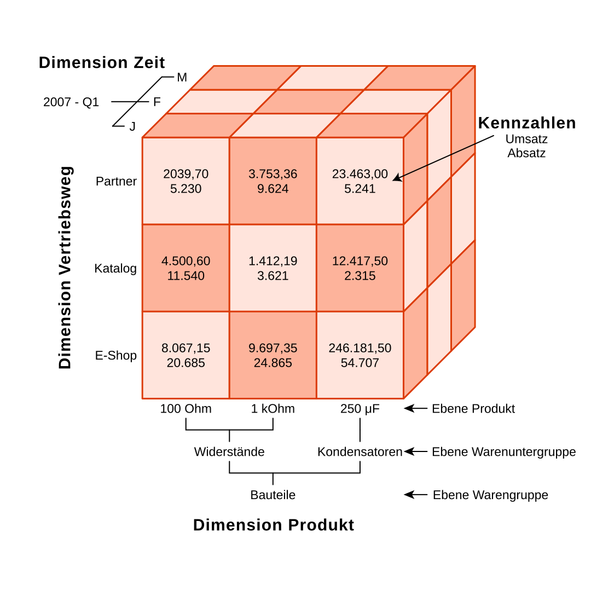
Definition
Softwaretechnologie, die Managern wie auch qualifizierten Mitarbeitern aus den Fachabteilungen schnelle, interaktive und vielfältige Zugriffe auf relevante und konsistente Informationen ermöglichen soll.
Im Vordergrund stehen dabei dynamische und multidimensionale Analysen auf historischen, konsolidierten Datenbeständen.
Betriebswirtschaftliche Einsatzbereiche
Einsatz multidimensionaler Systeme nach Funktionsbereichen
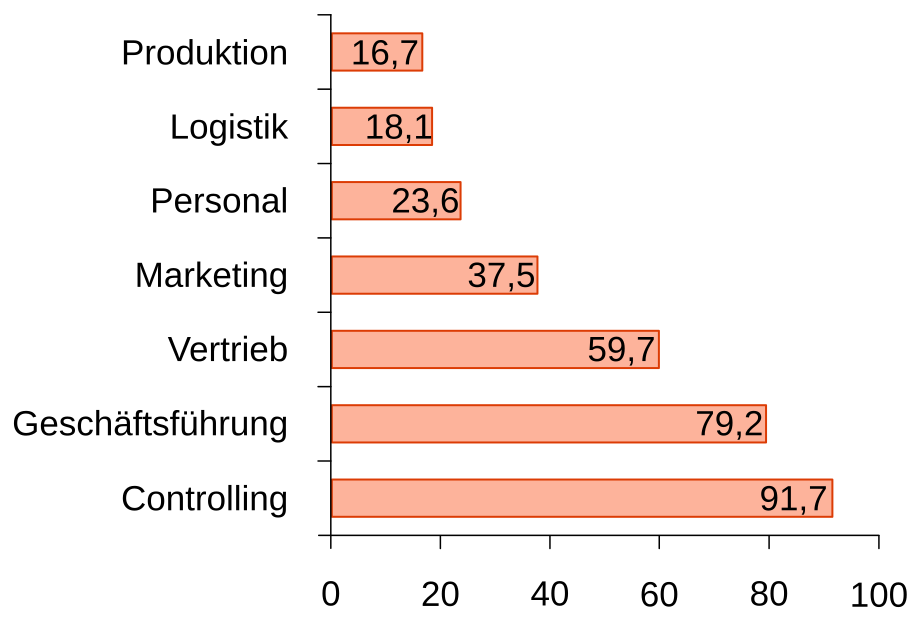
Betriebswirtschaftliche Einsatzbereiche
Vertriebscontrolling: Klassischer Einsatzbereich
- Analyse von Erlösen und Absatzmengen
- Zeit-, Kunden- und Artikeldimensionen
- Vergleiche Ist-Zahlen vs. Planzahlen
- Aufdecken von Abweichungsursachen
- Integration externer demografische und makroökonomische Daten
- 80/20-Analysen
Regeln und Kriterien für OLAP Systeme - Codd
Regeln und Kriterien für OLAP Systeme - Codd
- Multidimensionale Denkweise (Kernanforderungen):
- Mehrdimensionale konzeptionelle Perspektiven
- Grundprinzipien der gleichgestellten Dimensionen
- Unbeschränkte kreuzdimensionale Operationen über Dimensionen hinweg
- Unbegrenzte Dimensions- und Aggregationsstufen
- Zweck: Schnelle Ad-Hoc-Analysen (Kernanforderung):
- Stabile Antwortzeiten bei der Berichterstattung
- Technische Anforderungen:
- Transparenz
- Zugriffsmöglichkeit
- Mehrbenutzerfähigkeit
- Implementierungshinweise:
- Client/Server Architektur
- Dynamische Verwaltung „dünn besetzter“ Matrizen
- Sonstige Anforderungen:
- Intuitive Datenmanipulation
- Flexibles Berichtswesen
Navigation
Würfeldarstellung mehrdimensional strukturierter Daten
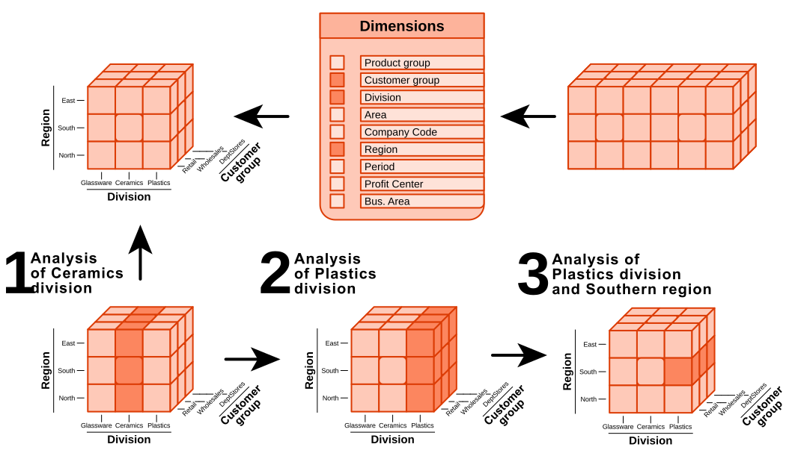
Navigation
Präsentation und Navigation
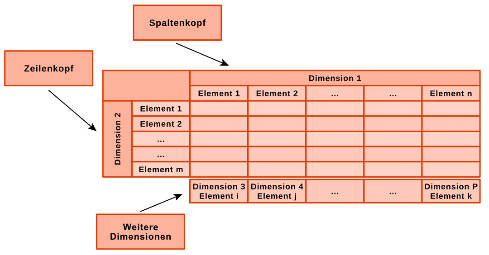
Navigation
Präsentation und Navigation - Rotation des Datenwürfels
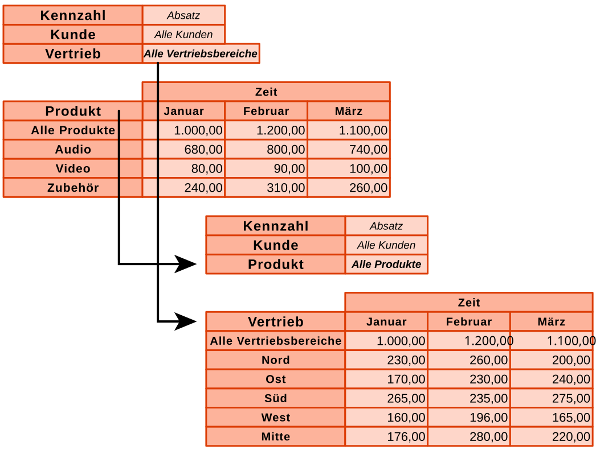
Navigation
Präsentation und Navigation - Rotation des Datenwürfels
Navigation
Präsentation und Navigation - Drill Down
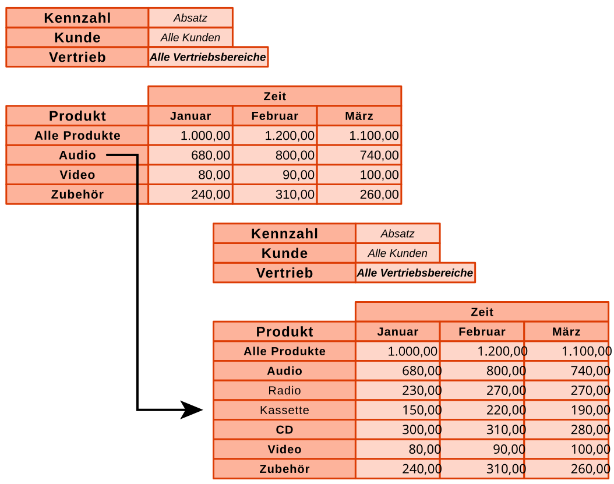
Navigation
Präsentation und Navigation - Drill Across
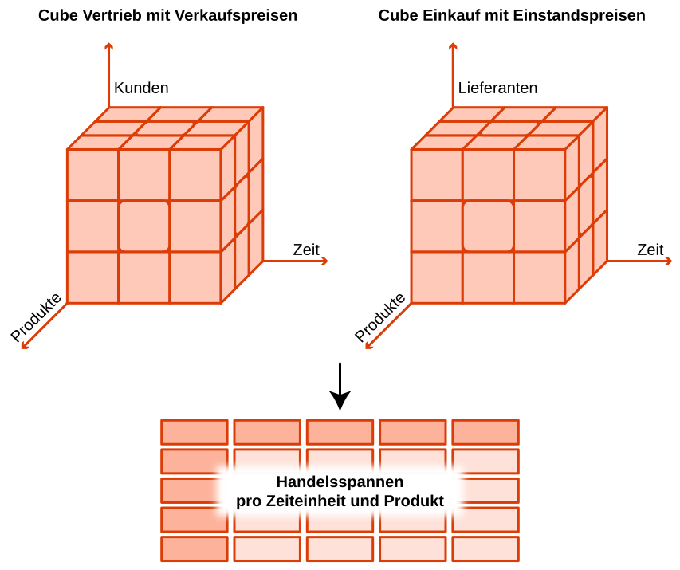
Frontend
Cognos Powerplay
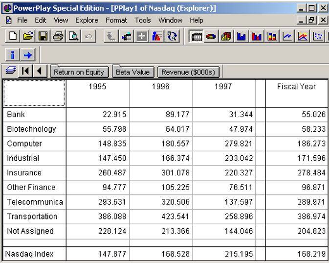
Frontend
Cognos Powerplay
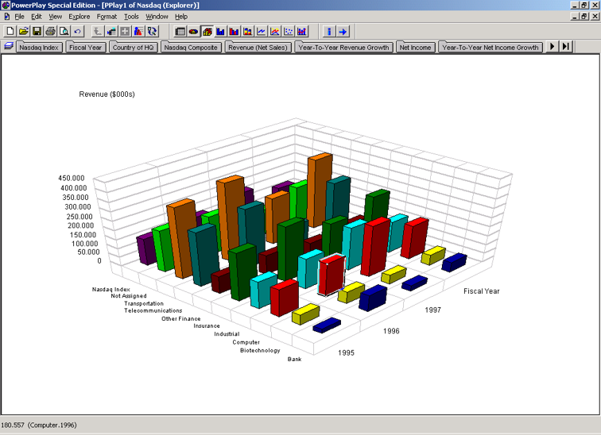
Frontend
Microsoft PowerBI
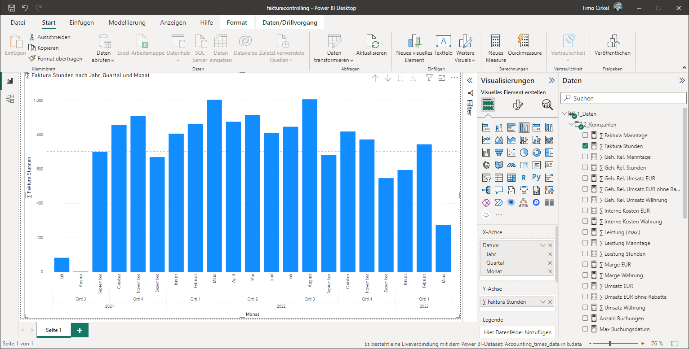
Frontend
Erweiterungen handelsüblicher Standardsoftwarepakete
Beispiel Palo
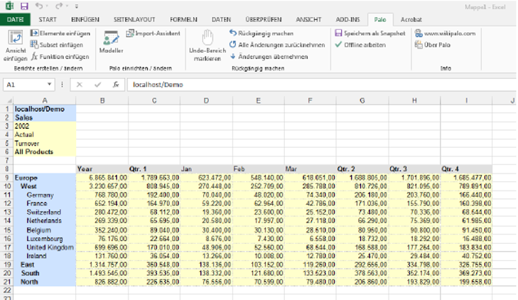
Frontend
Pivottabellen
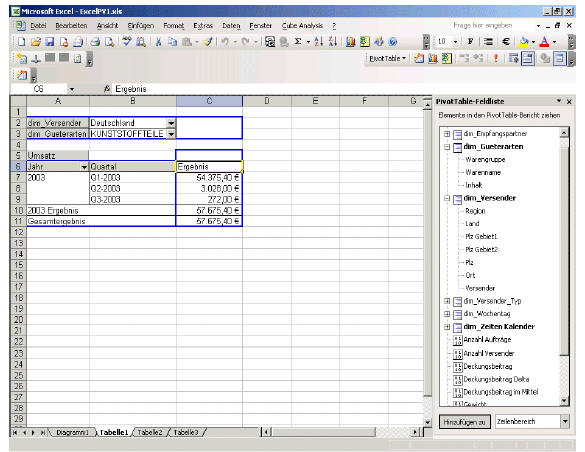
Frontend
Web Browser

Speicherung multidimensionaler Daten
Speicherung (logisch) multidimensionaler Daten
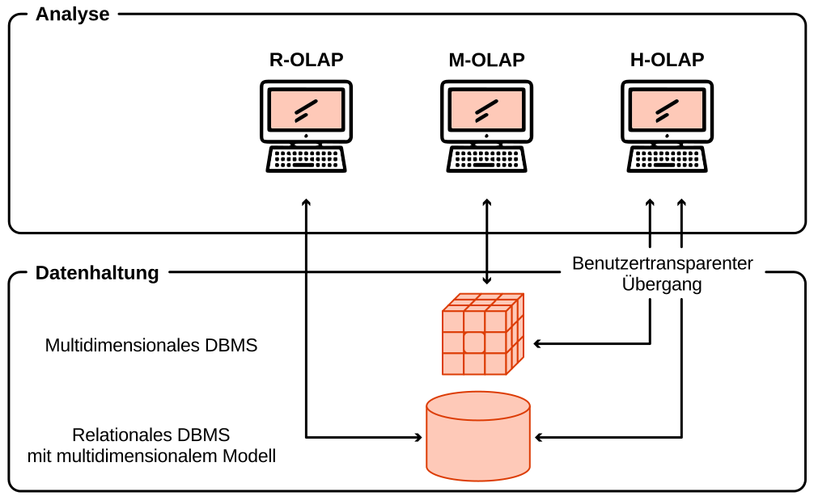
Speicherung multidimensionaler Daten
Speicherung (logisch) multidimensionaler Daten - SSAS

Speicherung multidimensionaler Daten - MOLAP
Speicherung (logisch) multidimensionaler Daten in einer …
(physisch) multidimensionalen Datenbank
- Datenbanksystem, das die auf konzeptioneller Ebene dargestellten multidimensionalen Datenstrukturen auch in ihrer physischen Datenbank- und Speicherstruktur umsetzt (Multidimensionales DBMS = MDBMS).
- Multidimensionales OLAP (MOLAP)
- Komprimierte , multidimensionale Arrays
- Als File abgespeichert
- Aggregate (über die Hierarchien) werden nach dem Laden durch die OLAP Engine berechnet & gespeichert
- Abfragesprachen: MDX
- XML/A für administrative Aufgaben
Speicherung multidimensionaler Daten - MOLAP
Multidimensionale Datenbanksysteme
Vorteile
- Intuitiven Analysesprachen
- Hohe Performanz komplexer analytischer Auswertungen
- Vorberechnete Aggregate beschleunigen das Antwortzeitverhalten
- Geringerer Speicherbedarf (Kompression, keine Indizierung)
- Weniger Disk I/Os
Nachteile
- Datenmenge auf kleinere bis mittlere Volumina beschränkt (wenige Terabyte)
- Skaliert schlecht bei wachsender Zahl von Dimensionen
- Herstellerabhängige, proprietäre Datenbanksysteme
- Herausforderung: Datenwürfel mit dünn besetzte Dimensionen
- Ladevorgänge bzw. Reorganisations-/Reindizierungsläufe nehmen inakzeptable Zeiträume in Anspruch
- Schulungsaufwand für neue Technologie
Speicherung multidimensionaler Daten - MOLAP
Multidimensionale Datenbanksysteme
Note: The term multidimensional database is often confused with the term online analytical processing, but these terms have different meanings. An MDB is the database, and OLAP is the activity used to analyze the database. The confusion is caused by the word OLAP cube. An OLAP cube has the same meaning as an MDB; it means a multidimensional database.
Speicherung multidimensionaler Daten - ROLAP
Speicherung (logisch) multidimensionaler Daten in einer …
(physisch) relationalen Datenbank
- als zweidimensionale Objektdaten (Zweidimensionale Tabellen)
- mehrdimensional verbunden durch Metadaten
- in einem relationalen Server-Datenbanksystem (RDBMS)
- ROLAP
- Stern Schema
Speicherung multidimensionaler Daten - ROLAP
Vorteile RDBMS
- Bewährte Technologie
- Know How
- Standardisierte Datenbanksprache (SQL)
- Viele Tools, Open Source
- Skalierbar, Performance
- Kompatibilität, Plattformunabhängigkeit
Speicherung multidimensionaler Daten - ROLAP
Sternschema allgemein
- Mehrere Dimensionstabellen, die sich auf eine Faktentabelle beziehen
- Die Faktentabelle enthält diejenigen Attribute, die die betrieblichen Erfolgsfaktoren messen
- Jede 1:n Beziehung wird durch Schlüssel der Dimensionstabelle und Fremdschlüssel der Faktentabelle vermittelt
- Die Dimensionstabellen enthalten meist symbolische und diskrete Attribute. Dies erlaubt die Auswahl, Zusammenfassung und Navigation der Fakten
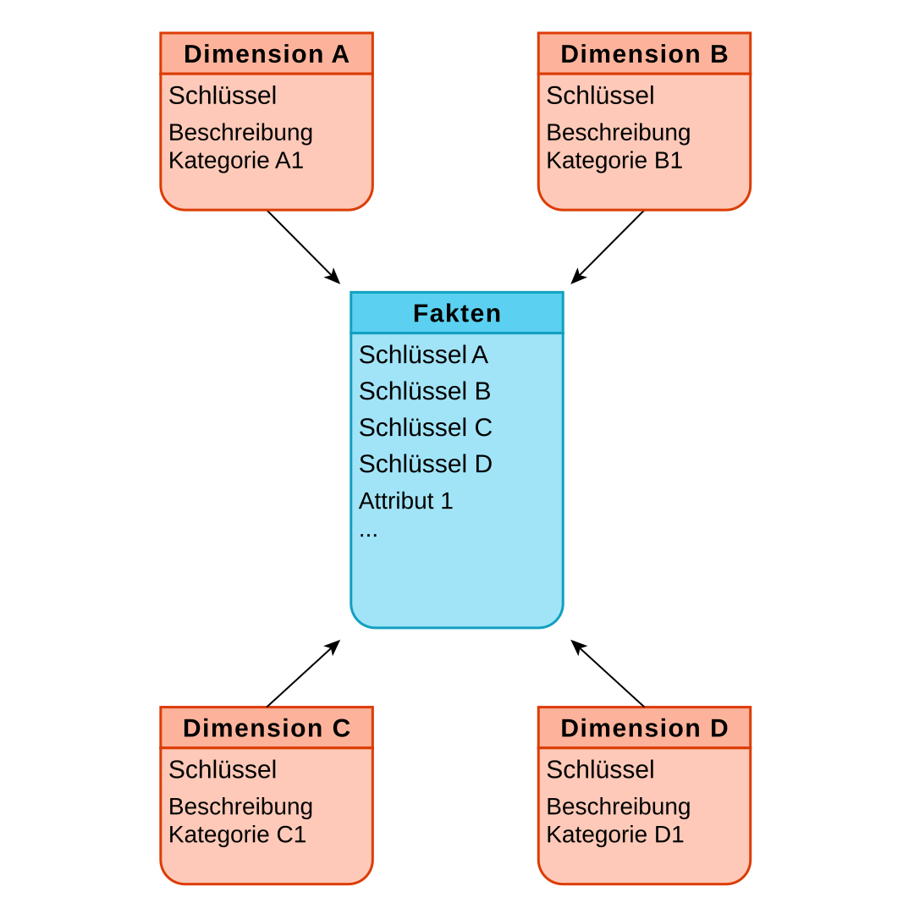
Speicherung mulidimensionaler Daten
OLAP Server
General information
OLAP Server
Data Storage Modes
| OLAP server | MOLAP | ROLAP | HOLAP | Offline |
|---|---|---|---|---|
| Apache Doris | Yes | Yes | Yes | Yes |
| Apache Druid | Yes | Yes | Yes | Yes |
| Apache Kylin | Yes | No | No | Yes |
| Apache Pinot | Yes | Yes | Yes | Yes |
| ClickHouse | Yes | Yes | Yes | Yes |
| Essbase | Yes | No | No | |
| IBM Cognos BI | Yes | Yes | Yes | |
| IBM Cognos TM1 | Yes | No | No | Cognos Insight Distributed mode |
| icCube | Yes | No | No | Offline Cubes |
| Jedox OLAP Server | Yes | No | No | No |
| Kyvos | Yes | Yes | Yes | Yes |
| Microsoft Analysis Services | Yes | Yes | Yes | Local cubes, PowerPivot for Excel , Power BI Desktop |
| MicroStrategy Intelligence Server | Yes | Yes | Yes | MicroStrategy
Office, Dynamic Dashboards |
| Mondrian OLAP server | No | Yes | No | |
| Oracle Database OLAP Option | Yes | No | No | |
| SAP NetWeaver BW | Yes | Yes | No | |
| SAS OLAP Server | Yes | Yes | Yes |
OLAP Server
APIs and query languages
| OLAP server | XML for Analysis | OLE DB for OLAP | MDX | Stored procedures | Custom functions | SQL | LINQ | Visualization | JSON | REST API |
|---|---|---|---|---|---|---|---|---|---|---|
| Apache Doris | No | No | No | No | Yes | Yes | No | Superset, Redash, Metabase, Tableau, Qlik, Pivot, PowerBI | Yes | Yes |
| Apache Druid | No | No | No | No | Yes | Druid SQL | No | Superset, Pivot, Redash | Yes | Yes |
| Apache Kylin | Yes | No | Yes | No | Yes | Yes | Superset, Zeppelin, Tableau, Qlik, Redash, Microsoft Excel | Yes | Yes | |
| Apache Pinot | No | No | No | No | Yes | Yes | No | Superset, Pivot, Redash | Yes | Yes |
| ClickHouse | No | No | No | No | Yes | Yes | No | Superset, Zeppelin, Tableau, Qlik, Redash, DataLens | Yes | Yes |
| Essbase | Yes | Yes | Yes | Yes | Yes | No | Yes | SmartView (Excel-AddIn), Oracle Analytics Cloud, Narrative Reporting, Tableau, IBM Cognos | ? | Yes |
| IBM Cognos TM1 | Yes | Yes | Yes | Yes | Yes | No | Yes | TM1 Web/TM1 Contributor, IBM Cognos Insight, IBM Performance Modeler, IBM Cognos Cafe for Excel, Cognos BI, TM1 Perspectives for Excel | Yes | Yes |
| icCube | Yes | Yes | Yes | Java, R | Yes | In the reporting | Yes | icCube reporting and all XMLA compliant visualization tools like Excel, etc | Yes | Yes |
| Jedox OLAP Server | Yes | Yes | Yes | Cube Rules, SVS Triggers | Yes | No | Yes | Microsoft Excel, Qlik, Tableau, Jedox Web, Power BI | No | Yes |
| Kyvos | Yes | Yes | Yes | No | Yes | Yes | No | Kyvos Insights, Microsoft Excel, Qlik, Tableau, Power BI, MicroStrategy, IBM Cognos, Business Objects, XLCubed, Looker, Altryx, and more | Yes | Yes |
| Microsoft Analysis Services | Yes | Yes | Yes | .NET | Yes | Yes | Yes | Microsoft Excel, SharePoint, Microsoft Power BI, and 70+ other visualization tools | No | No |
| MicroStrategy Intelligence Server | Yes | No | Yes | Yes | Yes | Yes | Yes | Dossier, Dashboard, Reports | Yes | Yes |
| Mondrian OLAP server | Yes | Yes | Yes | Yes | Yes | No | Yes | Yes | ? | ? |
| Oracle Database OLAP Option | No | Yes | Yes | Java, PL/SQL, OLAP DML | Yes | Yes | No | ? | ? | ? |
| SAP NetWeaver BW | Yes | Yes | Yes | No | Yes | No | Yes | ? | ? | ? |
| SAS OLAP Server | Yes | Yes | Yes | No | No | No | Yes | Web Report Studio | ? | ? |
SSAS
Fertiger Cube in SSMS

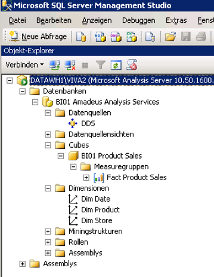
SSAS
Cubestruktur in SSDT definieren
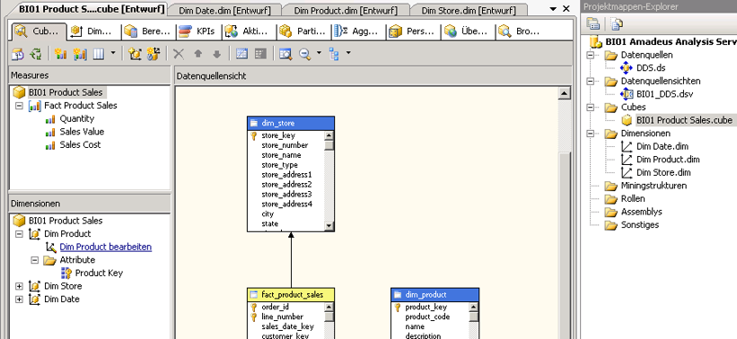
SSAS
Cubestruktur in SSDT definieren - Dimensionshierarchie

Azure Analysis Services

Azure Analysis Services
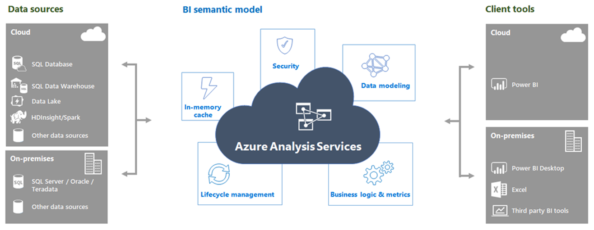

Zusammenfassung
Literatur
- Gluchowski, P., Gabriel, R., & Dittmar, C. (2008). Management Support Systeme und Business Intelligence: Computergestützte Informationssysteme für Fach- und Führungskräfte. Berlin: Springer